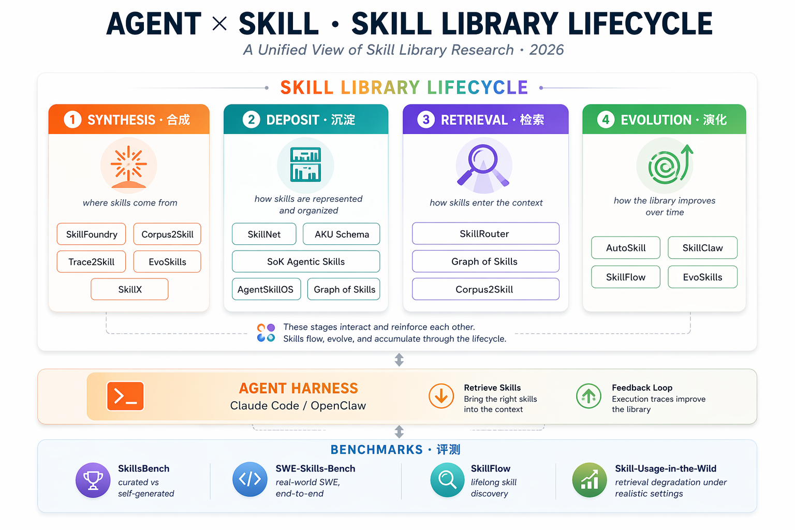

A Unified View of Skill Library Research · 2026
本综述聚焦 Anthropic Agent Skill 抽象（folder + SKILL.md + scripts / resources + progressive disclosure）下的研究进展，把 2026 年以来的核心工作串在一条统一的生命周期闭环上：合成 → 沉淀 → 检索 → 演化，并把真正具备外部 ground truth 的 评测 工作单独列为第五段。综述性质、prompt-level 记忆、GUI agent 等不符合本抽象的论文不在主线展示之列。

核心脉络图——上层 Skill Library Lifecycle 四站形成闭环；中间 Agent Harness（Claude Code / OpenClaw）作为消费者向下检索 skill、向上回灌执行轨迹；底部 Benchmarks 作为外部 verifier 探测不同阶段。跨阶段出现的论文意味着一篇工作同时扮演多重角色。
合成阶段回答"第一批 skill 从哪里来"。当前文献沿三条相互独立的路径展开：从静态文献/语料蒸馏（SkillFoundry、Corpus2Skill 把领域知识固化为 skill），从交互轨迹归纳（Trace2Skill、SkillX 在 rollout 中抽取可迁移条目），以及从生成–验证共演化自造（EvoSkills 用 Surrogate Verifier 约束 Skill Generator）。三条路径各有长短，目前尚无工作真正融合三源。
Carnegie Mellon University · 2026-04-05
面向科学场景（生物医学先行）的 skill 自演化框架：从 paper / protocol / 代码仓库等异构资源中自动挖掘操作契约，校验后沉淀成可执行 skill，是**距离天文领域最近的前置工作**。
Magellan Technology Research Institute · 2026-04-16
把企业级文档语料离线蒸馏成层级化、可导航的 skill 文件树，让 agent 在树上主动漫游而非做 RAG chunk 检索——同时服务"合成 skill"与"替代检索"两个阶段。
ETH Zürich · 北京大学 · 浙江大学 · 阿里 Qwen · 2026-03-30
并行分析多样化执行轨迹，把轨迹局部的教训蒸馏为可迁移的 declarative skill，不更新参数、不依赖外部模块，是"轨迹派"合成的典型路线。
UIC · MBZUAI · McGill · Columbia · ZJU · UBC · 2026-04-02
Skill Generator 与 Surrogate Verifier 共同演化，自动产出可执行多文件 skill bundle（SKILL.md + scripts + resources），SkillsBench 71.1% pass（+40.5 pp）。与 EvoSkill 单数 (2603.02766) 为两篇不同工作。
浙江大学 · 蚂蚁集团 · 2026-04-07
通过"层级 skill 设计 + 迭代精化 + 探索扩展"三机制自动构建跨环境通用 skill KB；在不同 agent backbone 间都有可观迁移性，是跨模型视角的零星探索。
沉淀阶段定义 "一个 skill 长什么样、它们彼此怎么摆"。在表示维度上工作呈现一条"薄 → 厚"的连续谱——从仅 metadata 的 skill card，到单文件 SKILL.md，再到 multi-file executable bundle；在组织维度上则从平铺到层级目录再到依赖图。SkillNet 提供了规模化的 200K+ SKILL.md 底座，AgentSkillOS 把管理问题拉到 ecosystem 尺度，Graph of Skills 则把组织进一步推向图结构。
ZJU · Alibaba · Tencent · UCLA 等多机构联盟 · 2026-02-26
发布 200K+ SKILL.md 开源工具集，规范 Discovery → Activation → Execution 三段协议；把 skill 形式化为 folder + 中心 SKILL.md，是 Anthropic 官方抽象最规范化的落地。
Shanghai Artificial Intelligence Laboratory · 2026-03-02
把 skill 组织问题拉到 ecosystem 尺度：层级化目录 + 运行时 DAG 编排，相比 flat invocation 在复杂任务上有显著增益。
UPenn · UMD · Brown · CMU · Lehigh · 2026-04-10
离线把 skill 库编译为类型化有向图（dep / wf / sem / alt 四类边），既是组织结构也是下一阶段的检索基座。
检索阶段决定推理时哪些 skill 被塞进上下文。SkillRouter 指出一条关键反例：只靠 metadata / 语义向量检索不够，skill 实现细节对命中准确率更决定性。由此分化出两条路线——继续扩信息（Graph of Skills 用依赖感知召回依赖完备的 bundle）与绕开检索（Corpus2Skill 让 agent 在 skill 树上主动 navigate）。Claude Code 的 progressive disclosure 实践更靠近后者。
Alibaba Group · 2026-03-23
大规模 skill 仓库下的 retrieve + rerank 路由；系统揭示一条对所有仅靠 metadata 选 skill 的方案都致命的发现——实现内容比描述更能决定命中。
UPenn · UMD · Brown · CMU · Lehigh · 2026-04-10
在检索维度的核心机制是反向感知 Personalized PageRank：沿依赖边反向扩散相关性，恢复语义上离查询较远的底层 prerequisite skill。
Magellan Technology Research Institute · 2026-04-16
把"检索"问题重新表述为"agent 在层级 skill 树上主动漫游"——和 Claude Code ls skills/ + description-first 的原生行为天然对齐。
演化阶段决定 skill 库随时间变好还是变坏。几乎所有工作都在做"加"——增量累积、cross-user 聚合、rubric patch、生成/验证共演化——而对"删 / 合并 / 退休"与"跨模型归一化"的研究几乎空白。SkillClaw 是集体演化的代表，SkillFlow 给出唯一真正 lifelong 的评测视角，AutoSkill 则是距离"天文领域长任务终身学习"最近的单机方案。
华东师范大学 · 上海人工智能实验室 · 2026-03-01
从用户交互中自动派生、维护、复用 skill 的终身学习框架，不重训模型；与本综述"在天文任务上自动积累 skill"目标最相似，是主要参考对象之一。
DreamX Team · AMAP-ML (Alibaba / 高德) · 2026-04-09
OpenClaw 生态上的 collective evolver：持续聚合 cross-user 交互轨迹，更新共享 skill 集合。单调不降的 skill 池 + 夜间验证门是其工程贡献。目前综述里最热（❤ 282）。
USTC · Toronto · Sydney · 2026-04-19
Agent 从零 skill 起步，用 trajectory- 与 rubric-driven patch 随任务推进演化；Claude Opus 4.6 上 +8.43 pts。既是演化方法也是 lifelong 评测——本综述唯一兼具二者。
UIC · MBZUAI · McGill · Columbia · ZJU · UBC · 2026-04-02
在演化维度的核心机制是Surrogate Verifier 与 Skill Generator 共同训练——"可执行"被显式写进 loss，代价是评测链条闭环、自我肯定的风险。
评测带独立于生命周期闭环——四份 benchmark 分别从不同位置"探针"进 loop：SkillsBench 暴露了"curated 有效、self-generated 无效"的核心裂缝；SWE-Skills-Bench 把 49 份 Anthropic-format SWE skill 放进真实 GitHub issue 做端到端测；SkillFlow 是唯一真正 lifelong 视角；Skill-Usage-in-the-Wild 则表明把 skill 放进"真实检索+精化"管线后性能显著退化。当前评测在 5 个结构维度上仍有系统性缺陷（评估对象混淆、时间静态、基线不对等、库内在属性盲区、verifier 循环），这是后续研究的富矿。
BenchFlow · 2026-02-18
86 任务跨域 benchmark；关键发现：curated skill 显著涨、self-generated skill 无增益——暴露 skill 生成质量瓶颈，本综述多处引用作为 motivating evidence。
MBZUAI · Nanjing University (+ SCUT + UNSW) · 2026-03-16
49 份 Anthropic-format SWE skill 配真实 GitHub issue，端到端测"skill 在真实场景是否真的有用"；最接近"真实环境 skill 有效性"的评测。
USTC · Toronto · Sydney · 2026-04-19
在评测维度上的独特之处是时间维度——agent 从"零 skill"起步，随任务族推进累积库，第一次把"库本身是时序对象"这件事写进 benchmark 协议。
UCSB (Shiyu Chang Lab) · MIT CSAIL · MIT-IBM · 2026-04-08
Handcrafted skill 换成"检索 + refine"管线后 skill 使用显著退化；targeted refinement 可以部分恢复——现实条件下 skill 有效性的压力测试。
训练无关框架让多模态 agent 推理时自动创造与优化工具，通过自演化与记忆合并提升推理能力。
给自演化 agent 配一组"记忆 skill"（描述 + 内容规范），由 controller 选择、executor 执行、designer 持续演化。
用专门 agent + Multi-Granularity Policy Optimization 合成高质量、可验证的推理训练数据。
通过层级化经验记忆和分层采样，改进 GUI 在线 RL 的信用分配和经验迁移。
对 Claude Skills 生态做数据驱动分析，刻画 skill 在触发条件、过程逻辑、工具交互维度的结构特征。
通过层级 skill 发现 + 递归策略演化让 LLM agent 迭代增强，属于 RL 维度的 skill 学习。
综述：现代 LLM 正走向模块化 agent 架构，按需加载 skill，需要标准化协议与生命周期管理。
把 skill 文件作为 prompt injection 的攻击面，量化 SKILL.md 生态在 Claude Code / Gemini / Codex CLI 下的受攻击风险。
SoK 综述：把 skill 形式化为 $S=(C,\pi,T,R)$，归纳七种设计模式，从 metadata progressive disclosure 到 marketplace 分发。
用 self-play RL 训练通用 tool-calling agent，无需初始数据即可超越 base model 和监督 baseline。
对 agentic skill 供应链做形式化分析（OpenClaw 228K★ / Anthropic Skills 75.6K★），提出 SkillFortifyBench + 五阶段 skill 生命周期。
通过迭代失败分析自动发现并精化 agent skill；注意与 2604.01687 EvoSkills (复数) 是两篇不同工作。
诊断性 benchmark：评估语言 agent 从抽象需求自主创造并使用工具的能力，揭示一步式工具合成的局限。
自演化多 agent 框架，在动态环境中整合动态认知 + 实时决策 + 自适应记忆管理。
多模态 agent 的双流（experience + skill）持续学习，靠视觉接地摘要和 cross-rollout critique 累积可复用知识。
把 Anthropic Skills 标准特化为 AKU 七字段 schema（intent / procedure / tools / metadata / governance / continuations / validators）。
层级 RL 框架，用 skill 管理系统通过可复用策略与结构化 skill 库改进数学推理。
连续元学习框架，让 LLM agent 同时演化 policy 与可复用行为 skill，通过机会性更新减少停机。
通过保存和精化 subagent 代码让 LLM agent 自演化；沉淀的是 subagent，而非 Anthropic-format skill。
通用 agent 通过基于记忆的 RL（带状态提示 + skill 库）自主设计和改进任务专用 agent。
对 ClawHub 上 2500 个真实 skill 做安全审计，用 Skills-for-Skills 范式把审计流程封装成标准化 skill 模块。
两阶段自演化移动 GUI agent：rejection fine-tuning + group relative self-distillation。
让自主 agent 通过学习过去经验并在任务间迁移可执行洞察来快速适应新环境。
离线挖掘 Operator / Meta skill 并存为带 YAML-like metadata 的 skill card，组成可插拔代码效率优化工具包。
LLM agent 在训练中内化 skill，通过动态课程学习减少上下文开销并改进任务表现；skill 不落盘。
综述：统一视角覆盖 memory / skill / protocol / harness engineering，将 skill 放在"Stage 3: Packaged Expertise"。
对 Claude Code 的 TypeScript 源码做系统性逆向工程，映射出 MCP / plugins / skills / hooks 四种扩展机制。